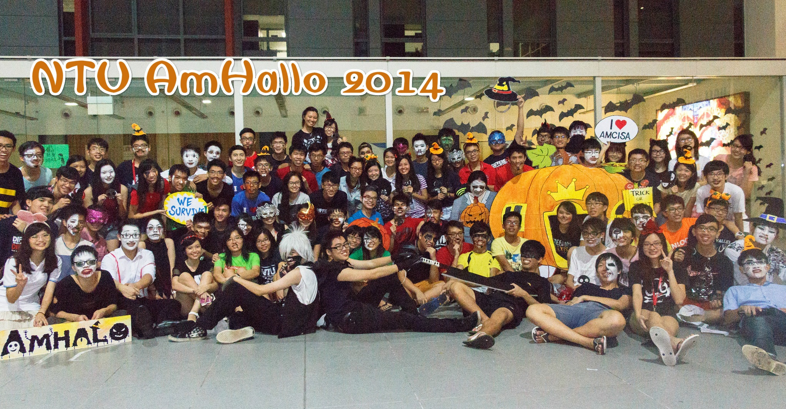
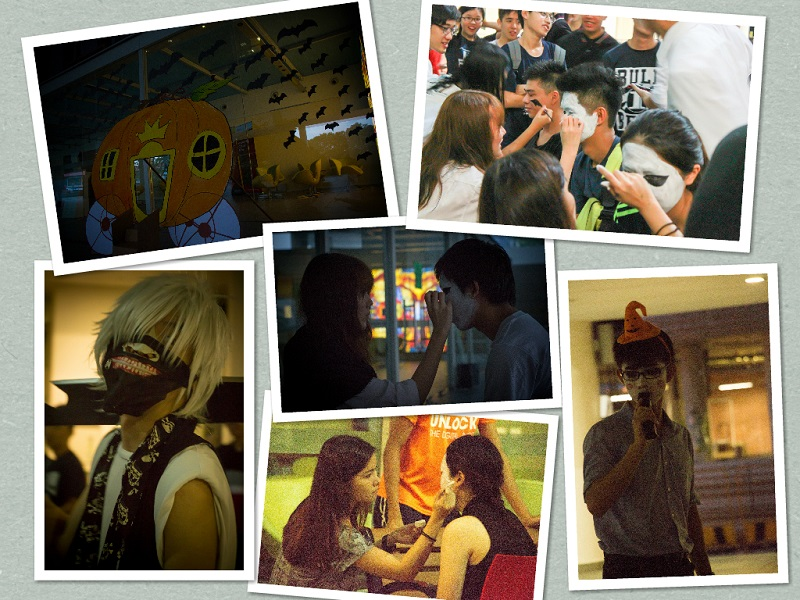
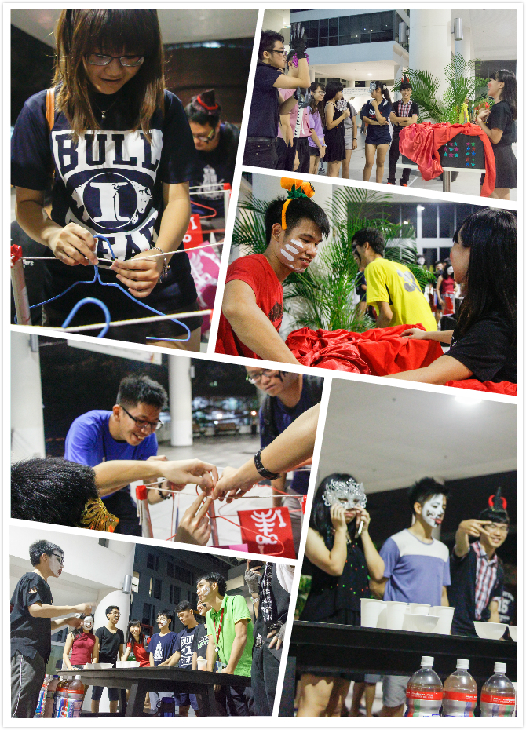
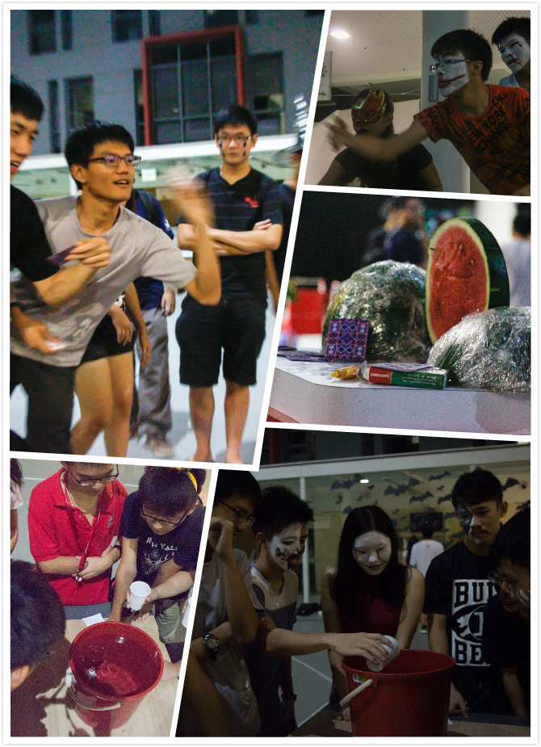
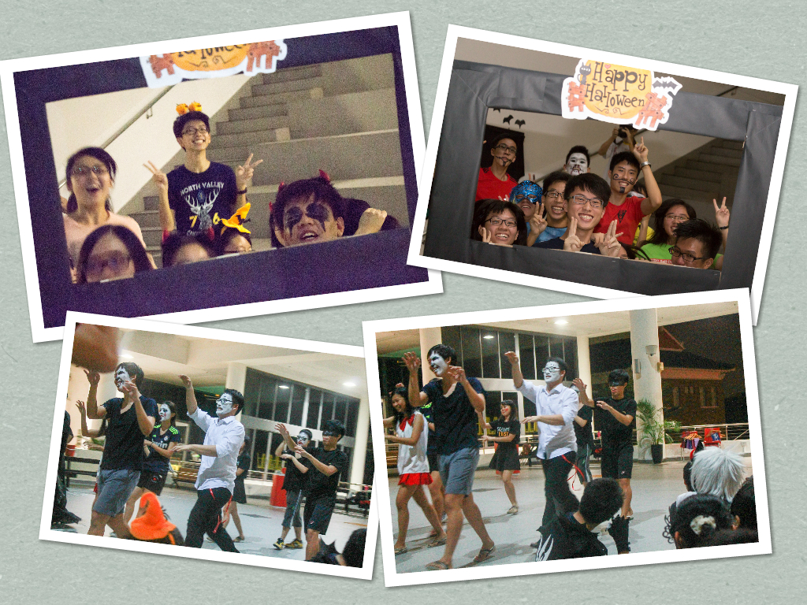
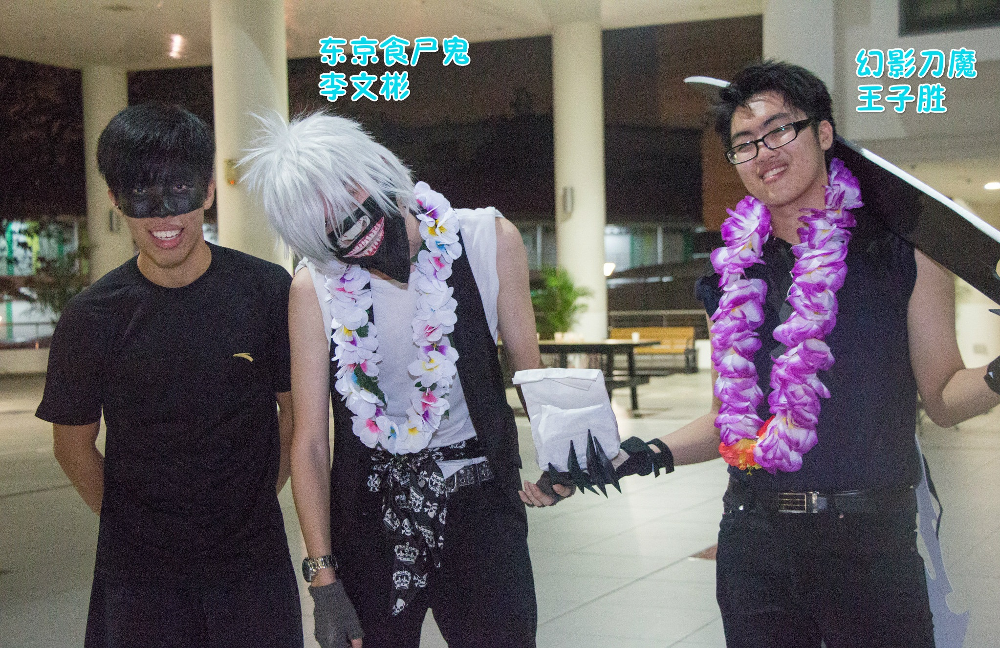

星期日（12/10）闷热难耐的夜晚，面对即将来临的星期一，Monday Blue是不是不约而同地涌上心头呢？以为就要和满桌子的笔记和讲义共度夜晚之际，各位junior是不是听见一阵敲门声？满腹狐疑地把房门打开，你也许看见吸血鬼与蝙蝠，也许是天使和无脸男，又或许是小红帽和僵尸出现在你房门口。不用怀疑，你没有眼花，这是Amhallo的宣传活动到你的门口了。
当天下午，一群amcisa main committee和hall rep从下午开始化妆，再换上由main com们自制的道具和服装，势必要给所有Junior一个惊喜。当然，我们要特别鸣谢漂亮大方的小洁和秀彬替我们化妆，营造出万圣节的可怕效果。除了上述提及的几个角色，main com们也化妆为小蜜蜂、默剧男和米妮。
大约八点钟，大家便分为两三人一组的小队，向junior们的房间出发。小编在当天的角色是僵尸，被和另外一个僵尸和小红帽组成一个不太正常的组合。前往hall4的路上小编一直不敢抬头，深怕自己可怕的脸吓坏路人。找到junior们的房间之后，我们采取两个策略。对于女生，小红帽先去敲门说有人要追她，然后两个僵尸就突然冲到房门前，惊吓指数有八十分。遇到男生，僵尸便直接在门外大声敲门，一开门看见僵尸脸想必也达到吓人的效果。说实在的，成功吓到人真是自豪感满分啊!被吓到的各位，你们错愕的表情就是我们的动力啊（好啦，这么说似乎有点变态，可是事实却是如此。）
除了宣传10月26日的amhallo活动，这次的宣传活动也旨在筹款。由于这是amcisa第一次举办万圣节活动，因此资金方面有些缺乏，便以卖零食的方式来筹款。当然，所有junior们都慷慨地掏出两块钱给我们，真是万分感谢！
由于人手不足，因此这次的宣传活动并未敲响senior的房门，但是senior们以及刚巧不在房间的junior请不要觉得遗憾，因为只要你们报名参加10月26日的活动就可以和我们共庆万圣节。还在等什么？赶快在网上报名参加amhallo之通往古堡的南瓜车，和我们度过愉快的星期天晚上吧!

2014年10月26日的夜晚，Amhallo之通往古堡的南瓜车在HSS FOYER正式引爆！这是AMCISA首次举办万圣节庆祝活动，你是不是和我们一起写下历史的成员之一呢？
夜幕降临时，妖精们陆续出现在HSS FOYER。第一个抵达的是穿着黑色衣裳的幻影刀魔，他手上拿着一把大刀，显然是有备而来。再迟一些，妖精们更多了，不过都不听话地没有还原妖精的面貌。不过我们早有准备，漂亮大方的化妆师秀彬以及嘉嘉已经准备帮助大家现出原形。

当中，有的是吸血鬼，有的是睡眠不足的熊猫男，有的是嘴唇发黑的女巫，也有面目狰狞的骷髅脸。由于化妆师人数有限，有的小妖们干脆自己动手，势必要将身旁的友人打回原型。我们也注意到有些害羞的妖精们仍旧不愿意以真面目示人，但毕竟你们拥有参加这个群妖宴会的勇气便十分值得赞赏了。
我们非常荣幸邀请到口才一流的潘奇峰僵尸先生担任这次活动的司仪。他脸上可怕（还是可爱？）的妆容加上亮橙色的发圈，请问有没有让你眼前一亮呢？

僵尸男长智调配了许多女巫的毒药，妖精们被分在桌子两侧，个别将手中的乒乓球往中央的杯子弹。若乒乓球成功弹入杯子，对方就得喝下特调的饮料。白雪公主 建勋及政康喝下了最多特调，你们究竟是喝到了可口的果汁还是咸咸的酱油混水呢？
娇小玲珑的蜜蜂小姐佳娴负责带领大家挑战十个等级的恐怖箱子。把手深入里头，你摸到什么了？先是一些软绵绵、湿乎乎的物体，尔后有冷冰冰的不知名条状物，后来进阶八九星级的恐怖箱子，你是否感觉到漆黑的箱子里有某个生物在你的手指周围蠕动呢？我们没有故弄玄虚，而是真的准备了蜗牛以及面包虫让各位妖精们挑战，看来所有妖精们都胆识过人，十星级的挑战没有难倒大家。
吸血鬼毅盛和无脸男Daniel将衣架子加上骷髅，旨在考验各位的平衡力，在限定时间内大家必须把衣架挂在细细的绳子上。诸位妖精们在这里展现了超凡的平衡力，钢索特级王有九人之多，他们是子豪、绍唐、振豪、恺文、汉健、宥良、姿君、瑞祈以及家镐。

再往前看，吸血蝙蝠晓瑜让妖精们以扑克牌射入敌人的头颅，让大家抒发沉积在心中的怨气。在这个环节，神射手韦安成功将八枚扑克牌射入西瓜片中，荣登冠军宝座。各位可不要随意得罪他，小心你的头颅跟西瓜一样。
天使巧雯准备了计时炸弹让大家挑战。在这里，炸弹挑战的并非大家的速度与反应，而是大家的人缘。若是不幸被队友陷害，只能沦为炮灰啦。慧洁同学不小心被冠上炮灰的称号，啊你是不是交了太多损友勒？
默剧男伟杰手握着ipad，立在一个精美的黑色相框前，没错，这一站就是要各位竭尽全力挤进这个不太大的框框里。伟杰拍照的当下，你有没有成功出现在相框里面，show出帅气美丽的脸呢？
来到最后一个游戏，Kelvin和泳诗带领大家进行的是僵尸的热身运动。把妖精们分为两队，一队负责投球，一队背着箱子。隔着一段距离，防守队可以左右移动以防止球被丢进箱子里。当Kelvin一声令下，球像流星雨一般往箱子的方向飞（被打中应该很痛吧？）。在这个投球的环节，晴晴成功荣获僵尸灌篮手的头衔，恭喜恭喜。

游戏结束，妖精们是不是听见我们的蝙蝠侠筹长征源夸张的哈哈笑声呢？他这是要感谢大伙儿拨冗出席我们的活动，让我们的活动成功举办。接着，maincom们带给大家一段不是很长的舞蹈表演，虽然整齐度十分有待加强，不过我们想要娱乐大家的心意可是一百分的。
茶点时间，Egg mayo三明治、炸香肠和龙眼糖水是我们款待大家的小小点心，不知道合不合大家的口味呢？
这次活动我们设了最佳服装奖来表扬那些精心打扮来出席活动的妖精们。共有两人一起分享了这个殊荣，他们是李文彬（东京食尸鬼）以及王子胜（幻影刀魔）。

最后，Amhallo终于圆满落幕。没错，就是你们成就了它，希望这会是一个令你们难忘的星期日夜晚。
请敬请期待Amcisa带给大家的下一个活动吧。